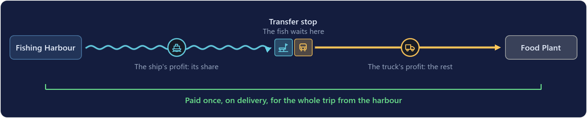

Stops & orders
Where a vehicle goes and what it does there.
A vehicle visits its stops in order, then starts again from the top.
- At each stop it unloads only what that station accepts. That is when you are paid. Then it loads whatever is waiting.
- Cargo that is not accepted stays on board, unless the stop is a transfer (below).
- Trains turn round at the end of the line, so a simple end-to-end line works.
- Add, remove and reorder stops at any time in the vehicle's window.
Pick on map
- Press Pick on map in the buy window or in a vehicle's window. The window steps aside.
- Click your stations one after another. Each click adds a stop, and the bar at the top lists them.
- Undo takes the last stop off again.
- Picking stays on until you press Done or Esc.
- A station you cannot use says why beside the mouse.
Full load
Every stop has a Full load box in the vehicle's window: the vehicle waits there until it is full. Use it where the cargo comes from, never where it is delivered.
Transfers
Cargo can change vehicles on the way. Say fish from a fishing harbour should cross the sea by ship, then go inland by truck to a food plant:


- Build a dock on the far shore and a road stop right next to it, so they join into one station.
- Give the ship the harbour's dock and that station, and tick Transfer on the second stop (in the buy window or the ship's window).
- Buy trucks that run from that station to the food plant.
- At a transfer stop, a vehicle leaves the cargo the stop doesn't accept. It waits there for your other vehicles, which take it before any other cargo of that kind.
- Vehicles can also pick up transferred cargo from another of your stations within 3 tiles, measured from the closest station tiles. Look for Nearby transfer stations in the station window. Leave Transfer off at the pickup stop.
- You are paid once, when it is delivered, for the whole trip from where it was first loaded.
- The first vehicle's profit shows its share of that fare, and the last one's the rest, so you can see what each leg earns.
- A vehicle never takes back cargo it left at its own transfer stop.
Unload only, don't load, go via depot
The small menu beside a stop's Transfer box holds three more orders. The button shows an icon for each one that is on.
- Unload only: everything comes off. What the station accepts is delivered and paid for; the rest is left there as a transfer. Nothing is taken on.
- Don't load: delivers what the station accepts, but takes nothing on, so the vehicle keeps its room for a later stop.
- Go via depot: after the stop the vehicle calls at your nearest depot, however far, for a service and any change of cargo on order. Ships and aircraft are looked after at their stations instead.
- A stop can't be Unload only and Full load at once, and Don't load is off while either is ticked. On a line, these orders hold for every vehicle on it.
Lost vehicles
When a vehicle gets lost a message says so: click it to open the vehicle. When several get lost at once, the message opens Problems.
A vehicle that says Lost cannot find a way to its next stop. It keeps trying; fix the road or track and it carries on.
A stop whose station was demolished is marked Demolished in the vehicle's window. Add another stop and it is taken off the route.
Changing cargo
- Press Change cargo beside the load bar in the vehicle's window, pick what it should carry and confirm.
- The vehicle delivers what it carries at its next stop, takes nothing on and goes to a depot, where the change is made. Ships and aircraft are changed at that stop.
- Until it is done you can cancel the change and get your money back.
- The vehicle keeps its orders, its age and its history.
- A train can also gain, lose or mix wagons. Converting a wagon costs $975 and a new one $6,500; a dropped one pays back what it is still worth.
- Anything else pays 15% of its price to switch.
- Cargo on board that no longer fits is lost.
In the vehicle's window
| Button | What it does |
|---|---|
| Follow | The camera stays on the vehicle. |
| Stop | Holds it at the next station; press again to start it. |
| Turn around | Trains only: reverses it where it stands and sends it to one of its stops it can reach that way, or else a depot. |
| Clone | Buys another one with the same orders. |
| Renew | Swaps it for a brand-new one of the same model. |
| Sell | Click twice. You get its current value back. |